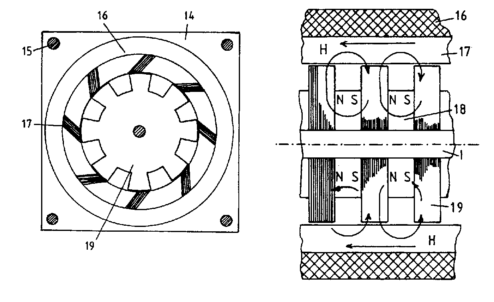

The following is a U.K. Patent Application filed by Harold Aspden on July 7, 1995 with a first publication date of February 12, 1997.
Abstract: A magnetic reluctance motor has a rotor which comprises several laminated rotor sections 19 axially spaced along a supporting spindle 1. Between these rotor sections there are permanent magnets 18 or ferromagnetic ring cores with rotor excitation windings serving as electromagnets. The rotor sections have salient poles interacting with a set of elongated stator cores 17 mounted parallel with the axis of the spindle and around which there is a magnetizing winding 16 which powers the motor by current pulses which promote magnetic flux switching (field H) affecting the magnetic attraction between the stator and rotor poles. The motor has an efficiency dependent upon the recovery of inductive energy fed to the magnetizing windings and a dual motor combination is described in which such recovery involves energy exchange between the two motors. A primary feature is the use of a solenoidal magnetizing winding 16 which determines the polarization of all the cores in the same motor.
